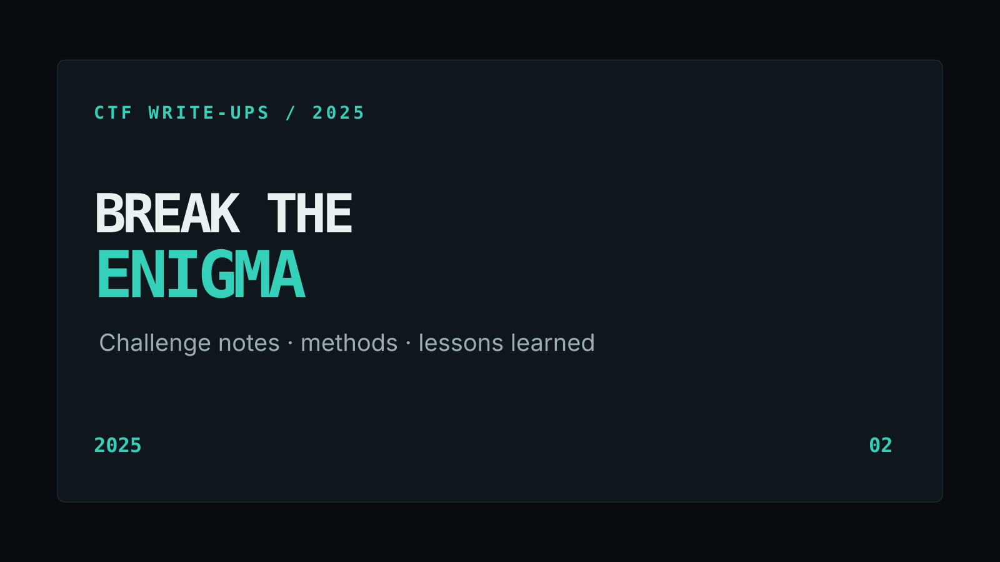

← Back to CTF write-upsBREAKTHEENIGMA CTF · 2025
2nd Runner-Up
Four challenge notes focused on approach, reasoning, and transferable lessons across obfuscation, cryptography, steganography, and hashing.

Published after the competition ended. All flags are redacted.
Obfuscation
OBFUSCATION
Kunci
Summary: Reversed a JavaScript challenge that combined Base64 data handling with XOR-based obfuscation.
Approach: I examined the supplied JavaScript to identify the encoded data and reversible operations, decoded the Base64 content, and applied the inverse XOR step to recover the plaintext. Result: [redacted].
Tools used: JavaScript runtime/editor, Base64 decoding, XOR analysis.
What I learned: Obfuscation is not encryption; separating each reversible layer makes unfamiliar code much easier to reason about.
Cryptography
CRYPTOGRAPHY
TRSB 4: Garam MadDelima
Summary: Derived the input required by a Python challenge after interpreting an obfuscated salt and its numeric key representation.
Approach: I inspected the supplied script, recognised that the salt was XOR-obfuscated, converted the numeric key into the representation used by the data, reversed the XOR operation, and used the recovered input in the program. Result: [redacted].
Tools used: Python, number-base conversion, XOR decoding.
What I learned: Representation is part of cryptographic reasoning: the same value behaves differently when treated as text, bytes, decimal, or hexadecimal.
Steganography / Transposition
STEGANOGRAPHY / TRANSPOSITION
Kereta Api
Summary: Isolated deliberately styled characters in an image, then used the challenge clue to select the correct Rail Fence configuration.
Approach: I first separated the visibly distinct uppercase letters and digits from the image, treated the result as ciphertext, and tested a Rail Fence decode using the indicated depth. Result: [redacted].
Tools used: visual inspection, Rail Fence cipher decoder.
What I learned: Visual presentation can be part of the cipher; accurately extracting the signal before choosing a transform is essential.
Hashing
Team write-up · WhiteUsagi
HASHING
Mirror Words
Summary: A teammate demonstrated how a program incorrectly accepted two different inputs with the same MD5 digest.
Approach: WhiteUsagi reviewed the supplied program logic, identified that it compared digest equality while separately requiring different input strings, and demonstrated the issue with a known collision pair. Result: [redacted].
Tools used: source-code review, MD5 hash verification.
What I learned: MD5 collision resistance is broken, so it must not be used where digest equality is treated as proof that two inputs are the same.